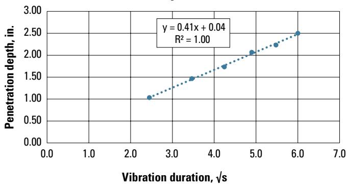
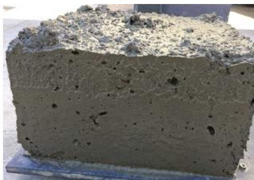
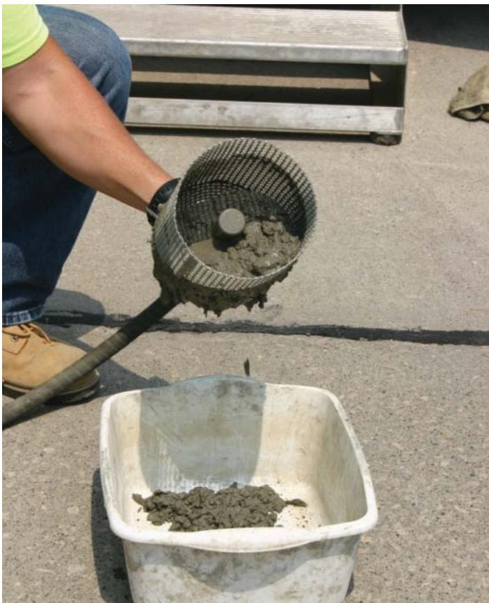
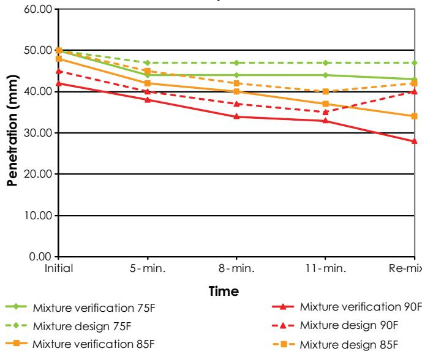
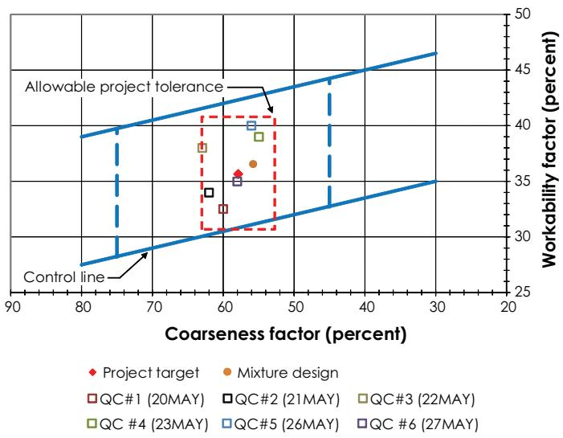

Concrete Workability Testing Methods
Concrete workability testing methods are defined as the set of procedures used to assess the property of freshly mixed concrete or mortar that governs how easily it can be mixed, placed, consolidated and finished into a homogeneous condition【1】. The tests quantify consistency, fluidity, response to vibration, mobility, pumpability, compactability, finishability and harshness by measuring slump or flow characteristics, edge stability and surface voids after standardized compaction and vibration sequences, thereby indicating the mix’s flowability, placeability and ability to retain shape under static or dynamic loading【3】【7】. By providing rapid checks on water content, aggregate grading and admixture dosage, these methods ensure that the fresh mix possesses the appropriate balance of fluidity for vibration‑induced consolidation and post‑vibration stiffness needed to avoid defects such as segregation, premature stiffening or excessive edge slumping【9】【10】.
Sources (10)
Purpose and quality objectives
The guides concur that concrete workability testing methods are aimed at assessing “that property of freshly mixed concrete or mortar that determines the ease with which it can be mixed, placed, consolidated, and finished to a homogeneous condition.” They “evaluate fresh‑concrete characteristics that define its workability—specifically consistency or fluidity, response to vibration, mobility, pumpability, compactability, finishability and harshness—and quantify the mix’s flowability and placeability by measuring how readily it moves, consolidates, and retains shape under static or dynamic loading.” To address vibration effects, “The Box Test and VKelly Test are used to evaluate a concrete mixture’s workability under vibration, specifically its edge stability and surface consolidation for slip‑form placement.” Moreover, the methods “evaluate and control the fresh‑mix’s workability (consistency) by measuring slump or flow characteristics—specifically the uniformity of slump, its loss over time, and early stiffening—and they measure flowability by quantifying the mortar’s spread after a standardized compaction and vibration sequence.” [1][3][7][9][10]
The following figure illustrates how the VKelly index is derived from the relationship between penetration depth and root time.

Plot of penetration depth versus root time for the VKelly test. [1]The figure displays a scatter plot with vibration duration in square roots of seconds on the horizontal axis and penetration depth in inches on the vertical axis, showing data points that form a linear trend.
[1] — Ch. 3 (p. 136), Ch. 6 (pp. 151–153), Ch. 7 (p. 213), Ch. 9 (pp. 275–277), Ch. 10 (p. 321); [3] — Box Test (AASHTO T 396) (p. 29), Workability (p. 29); [7] — 2. Factors Influencing Long-Li… (p. 33); [9] — Response to Vibration and Edge… (pp. 24–27); [10] — Ch. 6 (pp. 56–60), Ch. 7 (pp. 66–87)
The quality requirement addressed by concrete workability testing methods is that the fresh mix must possess the appropriate consistency, fluidity and vibration response to be placed, consolidated and finished without defects such as segregation, surface voids, premature stiffening, edge slumping or excessive shrinkage. The tests provide a rapid check on mix parameters—water content, aggregate grading, admixture dosage—and flag deviations that could lead to equipment jams or durability loss. By confirming the balance between fluidity for vibration‑induced consolidation and post‑vibration stiffness needed to retain defined edges, the slump test (ASTM C143/AASHTO T 119) provides an overall consistency check while the Box Test, VKelly Test and related vibration tests specifically assess a mix’s ability to compact fully under vibration yet remain stiff enough to keep straight vertical edges in slip‑form paving. Acceptable results—e.g., edge slump ≤ 0.25 in, surface‑void score ≤ 2, VKelly index 0.6–1.1 in/√s, and a slump of roughly one to two inches—indicate that the mixture will not produce placement defects such as inadequate fluidization, excessive edge slumping, segregation, or void formation that would compromise strength, durability, or dimensional stability. [1][3][7][9][10]
The following figure illustrates how aggregate gradation influences workability relative to paste content.
 Effect of aggregate gradation on workability as a function of paste content [1]
Effect of aggregate gradation on workability as a function of paste content [1]
The figure plots the VKelly Index against Paste Content for three different aggregate gradations, showing that higher paste content generally increases the index value.
[1] — Ch. 3 (p. 136), Ch. 6 (pp. 151–153), Ch. 7 (p. 213), Ch. 9 (pp. 275–277), Ch. 10 (p. 321); [3] — Box Test (AASHTO T 396) (p. 29), Workability (p. 29); [7] — 2. Factors Influencing Long-Li… (p. 33); [9] — Response to Vibration and Edge… (pp. 24–27); [10] — Ch. 6 (pp. 56–60), Ch. 7 (pp. 66–87)
Scope and applicability
Concrete workability testing methods are applicable to any fresh concrete intended for pavement construction—including conventional paving mixes with coarse aggregate ≤ 1.5 in. and slump between 0.5 and 9 in., paste‑only mixtures used in early‑hydration or rapid‑setting situations, the stabilization grout employed in slab‑stabilization projects, and all fresh‑concrete materials such as aggregates, cement, fly ash and admixtures. The methods are applied to freshly mixed concrete or mortar—most notably hydraulic‑cement concrete used in pavement—and are intended for any pavement construction activity that involves mixing, placing, vibrating, and slip‑forming where a consistent level of workability is required. They are used during laboratory mixture proportioning and pre‑qualification as well as on‑site during mixing, transport, and placement operations that involve vibration‑sensitive equipment such as slip‑form paving machines, central mix plants shipping concrete in non‑agitating trucks, and field placement where slump measurements are taken at specified times after discharge. The primary quality‑control test is the slump test (ASTM C 143/AASHTO T 119), which evaluates the ease of placement and consolidation; for slip‑form equipment and vibration‑consolidated mixes, the Box Test and VKelly Test are applicable to assess vibration response, edge stability, and surface voids. Workability must be ensured for the given mixture characteristics, the project paving equipment, and expected ambient conditions at time of paving, and a concrete mixture’s response to vibration is a good indicator of whether it will be placeable in the field. [1][3][7][9][10]
The following figure illustrates a box test specimen after the mold has been stripped.

Box test specimen after stripping the mold [9]The image displays a rectangular block of gray concrete that has been removed from its casting container, revealing the material’s internal structure and surface texture. This specimen is the result of the Box Test, which is used to assess the dynamic behavior of a mixture under vibration for slipform placement applications.
[1] — Ch. 3 (p. 136), Ch. 6 (pp. 151–153), Ch. 7 (p. 213), Ch. 9 (pp. 275–277), Ch. 10 (p. 321); [3] — Box Test (AASHTO T 396) (p. 29), Workability (p. 29); [7] — 2. Factors Influencing Long-Li… (p. 33); [9] — Response to Vibration and Edge… (pp. 24–27); [10] — Ch. 6 (pp. 56–60), Ch. 7 (pp. 68–72)
Workability testing is mandatory for every batch of concrete to confirm that its consistency, plasticity and workability meet the placement conditions. The standard slump test, specified by ASTM C143/AASHTO T119, must be performed on each randomly‑selected batch at the prescribed sampling frequency (approximately every 500 yd³) and at multiple times after batching (e.g., 5, 10, 15 and 20 min) to monitor slump loss. For slip‑form paving a slump of about 1–2 inches is normally required, but the specification may allow the contractor to select the slump that best matches their equipment and use the test only as a uniformity check. Because a standard slump does not adequately reflect a mixture’s response to vibration, the Box test and/or VKelly test become required laboratory procedures for slip‑form mixes; these tests must be repeated in the field during plant startup to verify that the production mix matches the approved lab results, with acceptance limits such as edge slump ≤0.25 in., surface‑void score ≤2 and VKelly index 0.6–1.1 in/√s.
Optional methods include the Vebe test for very dry mixes (no ASTM standard) and the compacting‑factor test for low‑workability mixes with maximum aggregate size ≤1.5 in.; both may be used when appropriate but are not required for general placement. The slump test itself may be applied optionally for general workability checks, provided it is not used as the sole acceptance criterion.
The slump test alone is inappropriate for determining suitability of slip‑form placement; likewise, using VKelly or Box tests outside controlled laboratory prequalification settings is inappropriate because their indices are highly sensitive to aggregate gradation and paste content. The compacting‑factor test becomes unreliable for higher‑workability mixes or when larger aggregates are present, and the Vebe test’s lack of an ASTM standard limits its use as a primary acceptance method.
Key limitations across all methods are: slump is only comparable for mixtures with similar proportions and is considered a pseudomeasure of workability that does not directly correlate with placement performance; sampling at fixed intervals can miss rapid variations in mix properties; control‑chart thresholds may fail to reveal special‑cause changes; VKelly indices are highly sensitive to gradation and paste content; compacting‑factor sensitivity declines for higher workability mixes; Vebe test results are confined to a 5–30 s range and lack standardization. [1][7][9][10]
[1] — Ch. 6 (pp. 152–153), Ch. 7 (p. 213); [7] — 2. Factors Influencing Long-Li… (p. 33); [9] — Response to Vibration and Edge… (pp. 24–27); [10] — Ch. 6 (pp. 56–60), Ch. 7 (p. 68)
Test methods and procedures
Valid workability test results require strict environmental control of concrete temperature—concrete must be kept below 85 °F (using chilled water and mobilizing water chillers) and the ambient conditions for set‑time testing must be maintained between 68 °F and 77 °F with both ambient and mortar temperatures recorded. Equipment performance is verified by regularly downloading vibrator monitor data and reviewing frequency changes to ensure vibrators are functioning properly. The source material does not provide specific calibration procedures for the test apparatus nor define operator qualification requirements; compliance is limited to temperature control, accurate data recording, and equipment monitoring. [10]
[10] — Ch. 6 (pp. 56–60), Ch. 7 (p. 87)
Sampling and testing frequency
Sampling locations are selected through a random‑sampling worksheet that assigns specific times and batch numbers, and the plan requires taking one slump sample at the central mixing plant and a second at the placement site for each batch. The quantity of concrete to be tested is tied to production volume: fresh‑mix properties such as slump, loss of workability, microwave water content, unit weight and air content are sampled every 500 yd³ (with aggregate gradation checked every 1,500 yd³), providing two measurements per batch. Frequency is governed by a schedule of two timed tests—first at about five minutes after discharge from the drum and second at about twenty minutes after discharge—and by control‑chart criteria that may adjust testing rates when special‑cause variations are observed. [10]
[10] — Ch. 6 (pp. 56–60), Ch. 7 (p. 68)
The guides require that samples be taken so they truly reflect the intended concrete mix and the production process. “Materials representative of the proposed mixture are mixed in the laboratory”, then “placed into the Box test mold, vibrated, and visually inspected for surface voids and conformance to a standard rating system”. To confirm that the field batch matches the approved mix, “These tests should be repeated in the field during the mixture verification stage (plant startup) to confirm that the production mixture has the same properties as the laboratory results for the approved mixture.” “Edge slump greater than 0.25 in. indicates that the mixture may not be appropriate for slipform placement.” “A surface void score greater than 2 indicates that the mixture may not be appropriate for slipform placement.” “Current experience indicates that a VKelly index between 0.6 in. … and 1.1 in./√?? is appropriate for mixtures that will be slipformed.
Sampling follows a structured random‑sampling plan, typically one sample per 500 yd³ of concrete produced as described by “Sampling frequency: 500 yd3 Sample from the batch containing random sample cumulative yd³ as shown in the table”; “Time and location are determined by random sampling worksheet”. Samples are taken both at the plant and on site – “Sample concrete at the central mix plant.” and “Sample concrete at the placement location and test.
Slump measurements are made twice: “Perform the first slump test 5 minutes after the concrete batch is discharged from the mixing drum.” and “Perform the second slump test 20 minutes after the concrete batch is discharged from the mixing drum.” to detect early stiffening. The standard slump test should be considered as a pseudomeasure of workability; “Changes in slump indicate variability in the materials and/or the batching process,” and “Uniformity of the concrete slump and slump loss is o primary concern.
Field specimens are collected by “Field samples should be obtained by vibrating a sample of concrete across a #4 sieve.” The sieved material can then be prepared in the lab – “Lab samples may be mixed or sieved.” By following these procedures—representative mixing, dual‑location random sampling, timed slump tests, and consistent specimen preparation—the measurements reliably represent the material, process, lot, or completed work. [1][9][10]
The following figure illustrates a vibratory mortar sampler used in these testing procedures.

Vibratory mortar sampler in use for field specimen collection. [10]The image shows a worker holding a cylindrical wire mesh basket attached to a handle, which contains wet concrete and is positioned over a white plastic container.
[1] — Ch. 9 (pp. 275–277); [9] — Response to Vibration and Edge… (pp. 24–27); [10] — Ch. 6 (pp. 56–60), Ch. 7 (pp. 68–71)
Acceptance criteria and tolerances
The guides accept a slump result when it falls within the overall permissible interval quoted as “The slump test is valid for a range of results from 0.5 to 9 in.” For slip‑form paving, the commonly cited satisfactory band is “Typically, a range between 1 and 2 inches is satisfactory for slipform paving,” which may be used either as a fixed specification or as a uniformity benchmark.
Workability measured by the VKelly test is deemed acceptable only when the index lies inside the limits stated as “VKelly index for slipform paving mixtures should be in the range of 0.6 to 1.1 in./√s” and reinforced by “Current experience indicates that a VKelly index between 0.6 in. \mathbf { \Omega } _ { / \sqrt { S } }and 1.1 in./√?? is appropriate for mixtures that will be slipformed.”
The Box test imposes visual limits on edge deformation: both “more than ¼ in. deformation on edges is considered unacceptable” and “Edge slump greater than 0.25 in. indicates that the mixture may not be appropriate for slipform placement.” Surface‑void assessment adds a further visual threshold: “A surface void score greater than 2 indicates that the mixture may not be appropriate for slipform placement.” Consolidation must match the prescribed visual reference, as expressed by “degree of consolidation on each side as indexed against a template” and “Consolidation is subjectively rated against a visual standard (Figure 8).”
Statistical control of workability uses three‑sigma limits: batches are run “continue with every batch until three consecutive batches are within specification tolerance,” and the control chart limits are defined by “calculate the 3s control limits based on the QC data represented by the stable period.” Any measurement that falls outside these limits, e.g., “Sample 11-2 is outside of the 3s upper control limit,” triggers a special‑cause investigation.
Final set acceptance requires achieving a penetration resistance quoted as “final set of 4,000 lb/in² occurs” while maintaining test temperature conditions of “Maintain the ambient test conditions at 68°F to 77°F (lab and field tests).”
All listed numerical ranges, sigma‑based statistical criteria, and visual standards together constitute the acceptance envelope for concrete workability. [1][7][9][10]
The following figure illustrates how these principles apply to specific mixture parameters through an example of a coarseness factor and workability factor.
 Example mixture design coarseness factor and workability factor [10]
Example mixture design coarseness factor and workability factor [10]
The figure displays a scatter plot with the Coarseness factor on the horizontal axis and the Workability factor on the vertical axis. Two parallel blue lines define an allowable project tolerance envelope, while two dashed blue lines indicate specific control line boundaries within that range.
[1] — Ch. 6 (pp. 151–152); [7] — 2. Factors Influencing Long-Li… (p. 33); [9] — Response to Vibration and Edge… (pp. 24–27); [10] — Ch. 6 (pp. 56–60), Ch. 7 (p. 87)
Across the guides, concrete workability test results are first evaluated by comparing each measured value to the specification limits. For slip‑form placement an edge slump greater than 0.25 in or a surface‑void score above 2 signals non‑acceptance, and a VKelly index outside roughly 0.6–1.1 in/√s is also rejected. Likewise fresh‑concrete tests such as slump, loss of workability, microwave water content, unit weight and air content are checked against the project’s tolerance limits; any batch that fails must be adjusted until three consecutive batches satisfy the criteria.
Regarding lot‑average performance and variability, the guides differ. One set of guidance does not prescribe averaging or variability assessment; compliance is determined solely by each individual sample meeting its threshold. The other guide requires entering all results into a QC database, plotting them on control charts, establishing 3‑sigma control limits after a period of stable data, and investigating any measurement that falls outside those limits as special‑cause variability. Successive slump readings are used to monitor between‑batch uniformity and trigger corrective actions before the lot average drifts out of tolerance. [9][10]
The figure below illustrates a control chart demonstrating how such monitoring identifies out-of-control test conditions.
 Control chart showing out-of-control test conditions [10]
Control chart showing out-of-control test conditions [10]
The figure displays a statistical process control (SPC) plot tracking unit weight QC test data against established upper and lower control limits. The chart visually identifies specific regions where test results indicate that a process is unstable or out of control, requiring root cause analysis.
[9] — Response to Vibration and Edge… (pp. 24–27); [10] — Ch. 6 (pp. 56–60), Ch. 7 (p. 68)
Quality control and process monitoring
The workability program must continuously monitor a set of fresh‑mix characteristics that directly affect placement quality. Core consistency is tracked with the slump test: “The slump test (ASTM C143/AASHTO T 119) measures the consistency of the mix” and “the most common test method used to assess workability for quality control purposes is AASHTO T 119… the slump test… provides an indication of the consistency of an individual batch of concrete.” Slump loss over time is recorded at defined intervals: “Slump and loss of workability (5, 10, 15, & 20 min.)”. Acceptable slump ranges are specified, for example “range between 1 and 2 inches”, while edge‑slump limits such as “Edge slump greater than 0.25 in.” signal a problem.
Response to vibration is evaluated through the VKelly index: “VKelly index for slipform paving mixtures should be in the range of 0.6 to 1.1 in./√s” and “The VKelly index is the slope of this plotted line. Current experience indicates that a VKelly index between about 0.6 and 1.1 in/√s is appropriate for mixtures that will be slipformed.” The Box test provides feedback on surface voids and edge stability: “The Box test … provides feedback on surface voids and edge stability for a given mixture” and “A surface void score greater than 2 indicates that the mixture may not be appropriate for slipform placement.” Qualitative checks of consolidation and edge slumping are also required: “concrete is then qualitatively evaluated for the degree of consolidation and edge slumping”.
The guides further require monitoring of additional workability attributes: “Additional attributes that should be tracked include mobility, pumpability, compactability (e.g., compacting factor), finishability and harshness”. For very dry mixes a Vebe test may be used: “For very dry mixes the Vebe test offers a rapid check on plasticity”.
Water content and aggregate moisture must be verified because “Inaccurate aggregate moisture contents can impact workability, strength development, air entrainment, permeability, and shrinkage of the concrete mixture.” Air‑entrainment levels are watched each shift: “Air entrainment is monitored each shift; testing continues until three consecutive batches meet specification.” Mortar‑flow testing offers a supplemental sensitivity to water and air: “Mortar flow is most sensitive to water content and air content.”
Vibration behavior is examined in detail: “To better understand the ease with which concrete can be consolidated and finished as it passes through a paving machine, its behavior under and immediately after vibration must be assessed” and “the vibration must adequately fluidize the stiff concrete to promote good consolidation, yet the concrete must have sufficient stiffness after vibration for the slipformed paving edges to resist edge slumping.” Proper vibration is essential: “Proper vibration is essential to providing long‑term durability for a Portland cement concrete pavement.” However, excessive vibration can be detrimental: “Excessive vibration can adversely affect the entrained air properties of the concrete, resulting in premature failure due to freeze‑thaw deterioration,” and it may cause segregation: “Segregation is also an unwanted by‑product of excessive vibration.” Conversely, insufficient vibration leads to voids: “A pavement that is undervibrated will have excessive voids, resulting … reduced strength and durability.”
When any monitored parameter deviates from its control limits, corrective actions such as adjusting water, admixture dosages, mixing time or vibration practices are implemented to restore consistent concrete quality. [1][3][7][9][10]
[1] — Ch. 3 (p. 136), Ch. 6 (pp. 151–153), Ch. 7 (p. 213), Ch. 9 (pp. 275–277), Ch. 10 (p. 321); [3] — Box Test (AASHTO T 396) (p. 29), Workability (p. 29); [7] — 2. Factors Influencing Long-Li… (p. 33); [9] — Response to Vibration and Edge… (pp. 24–27); [10] — Ch. 6 (pp. 56–60), Ch. 7 (pp. 66–87)
The guides require immediate process adjustments or additional testing whenever any workability indicator moves beyond its established control limits. A slump measured by ASTM C 143/AASHTO T 119 that falls outside the generally acceptable 1‑ to 2‑inch window, or shows ‘significant changes in the slump on a given job indicating that changes have occurred in the characteristics of materials, mixture proportions, water content, mixing, time of test, or the testing itself’, triggers a review of mix design and repeat testing. Early stiffening is flagged when ‘slump can also be used as an indicator of early stiffening’ and slump loss is observed between the 5‑minute and 20‑minute tests (‘Performing slump tests at 5 minutes and 20 minutes after batching is a practice that is encouraged’). The mini‑slump cone test provides another warning: a decreasing ‘The mini-slump cone test monitors the area of smallslump cone samples made using paste at selected time intervals’ signals early hydration problems and calls for corrective action.
Edge‑related box‑test criteria also demand adjustment. Any ‘more than ¼ in. deformation on edges is considered unacceptable’, and the specific statements ‘Edge slump greater than 0.25 in.’ or a ‘surface void score greater than 2’ require the mixture to be re‑evaluated, water‑reducing admixture dosage modified, and the test repeated.
The VKelly index must remain within its prescribed band; values outside ‘VKelly index for slipform paving mixtures should be in the range of 0.6 to 1.1 in./√s’ or ‘VKelly index between 0.6 … and 1.1 in./√?? is appropriate’ indicate that aggregate gradation or paste content is off‑spec, prompting mix‑design revision.
Moisture‑related controls are equally critical. When the microwave water‑content chart shows a ‘special cause variability condition’ such as ‘Sample 11‑2 is outside of the 3s upper control limit’, batch proportions must be adjusted. Likewise, inaccurate aggregate moisture (‘Batching concrete based on inaccurate aggregate moisture contents can impact workability, strength development, air entrainment, permeability, and shrinkage of the concrete mixture’) necessitates proportion revisions and repeat workability checks.
Mortar‑flow measurements that deviate from baseline are also triggers: ‘Changes in flow indicate variability in the materials and/or the batching process that may not be observed from slump testing alone’ and because ‘mortar flow is most sensitive to water content and air content’, any drift calls for mix adjustments and additional monitoring.
Finally, vibration data outside the optimal range demand correction; ‘excessive vibration can adversely affect the entrained air properties of the concrete, resulting in premature failure due to freeze‑thaw deterioration’, while an ‘undervibrated’ pavement ‘will have excessive voids, resulting in reduced strength and durability’. Such deviations require adjustment of vibrator settings and verification testing. [1][7][9][10]
[1] — Ch. 3 (p. 136), Ch. 6 (pp. 151–152), Ch. 9 (pp. 275–277); [7] — 2. Factors Influencing Long-Li… (p. 33); [9] — Response to Vibration and Edge… (pp. 24–27); [10] — Ch. 6 (pp. 56–60), Ch. 7 (pp. 66–72)
Nonconformance and corrective action
When a concrete sample fails a workability test—such as showing surface voids in the Box test, exceeding slump‑loss limits, or falling outside microwave water‑content control limits—the guides require immediate corrective action. The batch must be remixed with an appropriate amount of water‑reducing admixture—“Samples can be remixed with the addition of water‑reducing admixture until they conform to the Box test standard”—and the test repeated until the mixture conforms to the required standard; “Mixtures requiring little or no additional water‑reducing admixture to meet the Box test standard are preferable over mixtures requiring higher dosages of admixture.” At the same time, the QC manager must notify the paving superintendent and suspend paving while investigating the cause—“Paving is temporarily suspended.” Corrective measures may include adjusting mixture proportions (e.g., reducing fly ash, increasing cement, removing added water) and applying temperature controls such as chilled water. The revised batch is then retested for slump, loss of workability, air content, and microwave water content to confirm it meets specification before work resumes—“Fresh concrete properties are tested on the adjusted 6-yd³ batch: slump, loss of workability, air content, and microwave water content tests are all acceptable.” Finally, testing frequency is increased to closely monitor the corrected process—“QC testing frequency will be doubled for the next 6,000 yd³ of production.” [1][10]
The following figure illustrates the mixture verification stiffening tests used to confirm that adjusted concrete proportions meet specification requirements.

Mixture verification stiffening tests (Modified ASTM C 359) [10]The figure displays a line chart plotting penetration depth against time for concrete mixtures containing Portland cement, fly ash, and water reducer.
[1] — Ch. 9 (pp. 275–277); [10] — Ch. 6 (pp. 56–60)
When a fresh‑concrete test such as slump loss or microwave water content falls outside the established three‑sigma control limits—or when a loss of workability is observed—the batch must be corrected by adjusting mix proportions (for example, adding water, reducing fly ash, or increasing cement). After any adjustment, the same workability tests are repeated; if the retested values fall within the control limits and meet the design tolerances, the concrete may be accepted with the documented adjustment and an increased testing frequency for a defined production volume. If the out‑of‑control condition cannot be resolved by simple proportion changes or the retest still fails, further investigation of root causes such as temperature rise or chemical incompatibility is required before a final decision; persistent failure after investigation leads to rejection of the batch. [10]
[10] — Ch. 6 (pp. 56–60)
Documentation and reporting
Inspection records for each concrete batch must include the date, time and random sampling location, together with all fresh‑property measurements. The QC program requires that every concrete batch be documented with the date, time and random sampling location together with slump measurements at 5, 10, 15 (and optionally 20) minutes, microwave‑determined water content, unit weight, air content, aggregate moisture and sieve‑analysis results, and any fresh‑property sensors such as maturity probes. Concrete workability testing records must capture the sampling location (central mix plant versus placement site), the exact timing of each slump test (5 minutes after discharge at the plant and 20 minutes after discharge on‑site), and for every test log the concrete temperature, ambient temperature, elapsed time and the measured slump; the results are then plotted for review. All of these test values are entered into a QC database, printed with the original worksheets, plotted on control charts and compared to the 3‑sigma limits; when a result exceeds an upper control limit, corrective actions such as adjusting water dosage, modifying fly‑ash or cement content, adding chilled water, or increasing testing frequency are recorded. Documentation of concrete workability tests should record the fresh‑mortar temperature at sampling, confirm that ambient conditions are kept between 68 °F and 77 °F, note the start of penetration testing about three to four hours after water contact and each subsequent interval, and for every penetration log the ambient temperature, mortar temperature, applied force and bearing area. Supporting records include compressive‑strength specimens at prescribed ages, vibrator monitor logs, weather analyses, and any certifications of laboratory calibration that support the test methods. [10]
The following figure illustrates how mixture verification is integrated with combined gradation analysis to support these documentation requirements.

Mixture verification combined gradation analysis [10]The figure displays a scatter plot comparing the coarseness factor and workability factor of concrete mixtures against allowable project tolerance limits. It plots specific quality control data points from different dates alongside a mixture design target to verify that fresh concrete properties meet specified gradation and consistency requirements. This visualization serves as a quality control check for the workability of freshly mixed concrete, ensuring it possesses the appropriate balance of fluidity and aggregate grading.
[10] — Ch. 6 (pp. 56–60), Ch. 7 (pp. 68–87)
Quality records for concrete workability testing are required to capture the measured values of each test performed. For slip‑form paving mixtures, the sink rate of the vibrating Kelly ball over 36 seconds is recorded and the slope on a root‑time plot is reported as the VKelly index; the index is then compared with the accepted range of 0.6 to 1.1 in./√s, and any result within this band serves as evidence that the mixture meets workability requirements. For other workability samples, slump measured at 5, 10 and 15 minutes, microwave‑determined water content, unit weight and air content are entered into a quality‑control database, printed together with the original worksheets, and plotted on control charts. The charts are examined for points beyond three‑sigma limits that indicate special‑cause variability.
All recorded data are reviewed as part of laboratory mixture proportioning and prequalification activities, and also during routine QC monitoring. When an out‑of‑limit condition appears on a control chart, the fresh‑property results are compared with the mixture design and prior QC history; discussions with the paving superintendent lead to corrective actions such as adjusting water content or mix proportions, increasing testing frequency, or adding chilled water, after which the revised batch is retested to confirm acceptance. The reviewed records become part of a data set that supports acceptance of the current concrete and are used to recalculate control limits on a weekly basis, providing documented evidence for evaluating future performance trends. [1][10]
The following figure illustrates a sample control chart used to monitor concrete unit weight.
 Sample control chart: concrete unit weight [1]
Sample control chart: concrete unit weight [1]
The figure displays a statistical process control chart tracking the variation of concrete unit weight across sequential sample IDs.
[1] — Ch. 6 (p. 152); [10] — Ch. 6 (pp. 56–60)
Relationship to long-term performance
The guides agree that the Box test, which evaluates edge deformation under a standardized vibration, uses a limit of “more than ¼ in. deformation on edges is considered unacceptable.” When this criterion and low vibration response are satisfied, “the mixture is expected to place without excessive voids, segregation, or cracking, which in turn supports longer service life and greater resistance to traffic‑induced distress.” Similarly, the VKelly index provides a quantitative measure of vibration response; “Current experience indicates that a VKelly index between 0.6 in. \mathbf { \Omega } _ { / \sqrt { S } }and 1.1 in./√?? is appropriate for mixtures that will be slipformed,” and achieving this range “to arrive at a mixture that will yield the durability, surface finish, and edge stability that are both desired and specified.” The guides also note thresholds indicating poor workability: “Edge slump greater than 0.25 in. indicates that the mixture may not be appropriate for slipform placement” and “A surface void score greater than 2 indicates that the mixture may not be appropriate for slipform placement,” prompting mix adjustments before field production.
Daily quality‑control monitoring of slump loss, unit weight, air content and microwave‑measured water content is required because “By keeping these measured properties within the established tolerances, the concrete achieves its designed strength development and resists distress mechanisms such as sulfate/aluminate reactions, thereby supporting the intended service life of the pavement.” Accurate aggregate moisture measurement “drives adjustments to the mix proportions that keep strength development, air entrainment, permeability and shrinkage within acceptable limits; by controlling these properties the concrete remains uniform and durable, which translates into a longer expected service life and greater resistance to cracking, freeze‑thaw damage and other distress mechanisms.” Finally, vibration control is emphasized: “Proper vibration is essential to providing long-term durability for a portland cement concrete pavement,” while “Excessive vibration can adversely affect the entrained air properties of the concrete, resulting in premature failure due to freeze-thaw deterioration” and “Segregation is also an unwanted by‑product of excessive vibration.” Together, these measured workability indicators directly inform expected service life and resistance to various forms of distress. [1][9][10]
The following figure illustrates example water-to-cement ratio quality control test data alongside corresponding concrete temperatures to demonstrate these monitoring practices in action.
 Control chart of microwave water-to-cement ratio and concrete temperature over time. [10]
Control chart of microwave water-to-cement ratio and concrete temperature over time. [10]
The figure displays a control chart tracking the microwave water-to-cement (w/cm) ratio alongside concrete temperatures across various sample IDs, with horizontal lines indicating target averages and upper/lower control limits.
[1] — Ch. 6 (p. 152), Ch. 9 (p. 275); [9] — Response to Vibration and Edge… (pp. 24–27); [10] — Ch. 6 (pp. 56–60), Ch. 7 (pp. 66–72)